Multímetro · Práctica 5Conectar y medir en la práctica 5
32 imágenes: configuración fotorealista del multímetro y 31 láminas de los circuitos, sus mediciones y las alternativas con 3.3 kΩ y potenciómetro. Abre primero el PDF de la guía para revisar materiales, conexiones internas de la protoboard y configuración de tu instrumento.
Voltaje en paralelo; corriente en serie con una abertura; resistencia sin fuente y con el componente aislado. Los números en las pantallas son valores ideales, no mediciones de laboratorio.
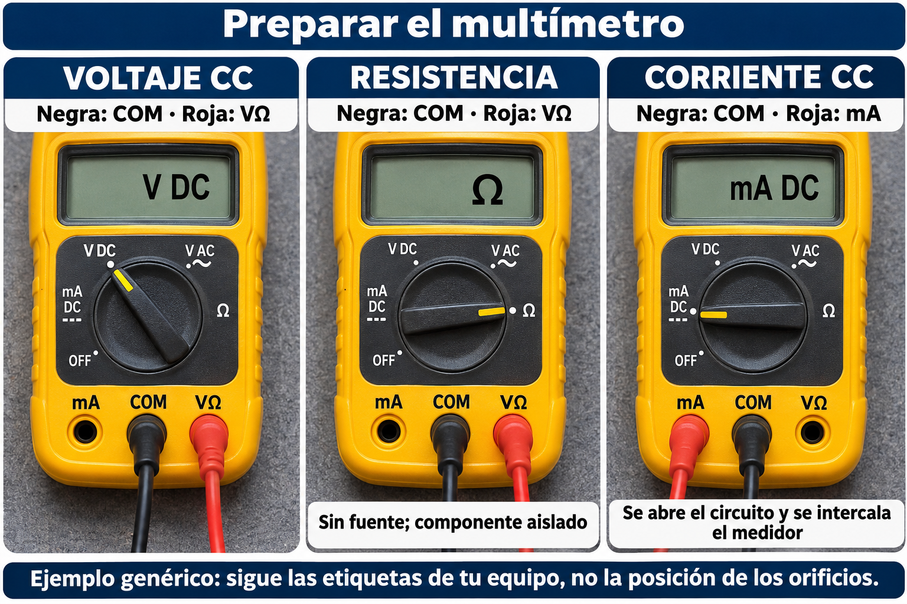
Referencia fotorealista genérica. Sigue las etiquetas de tu equipo: COM para negra; VΩ para voltaje o resistencia; mA para corriente, según el fabricante.Abrir imagen completa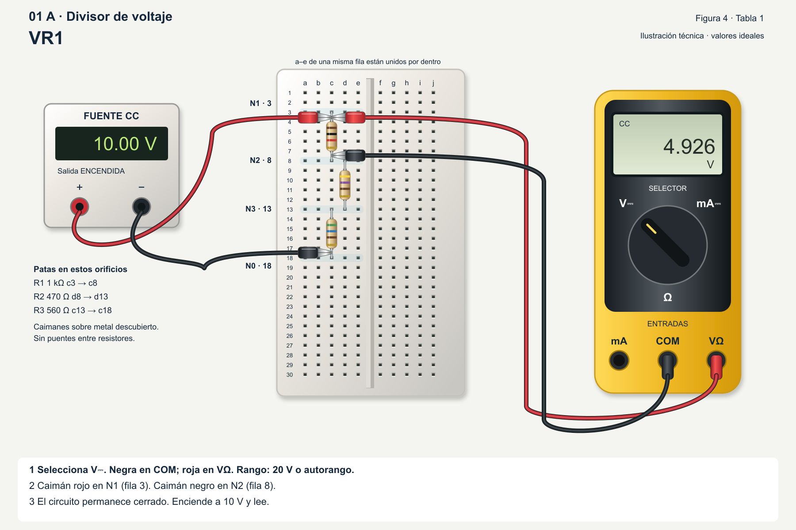
1 Selecciona V⎓. Negra en COM; roja en VΩ. Rango: 20 V o autorango. 2 Caimán rojo en N1 (fila 3). Caimán negro en N2 (fila 8). 3 El circuito permanece cerrado. Enciende a 10 V y lee.Abrir imagen completa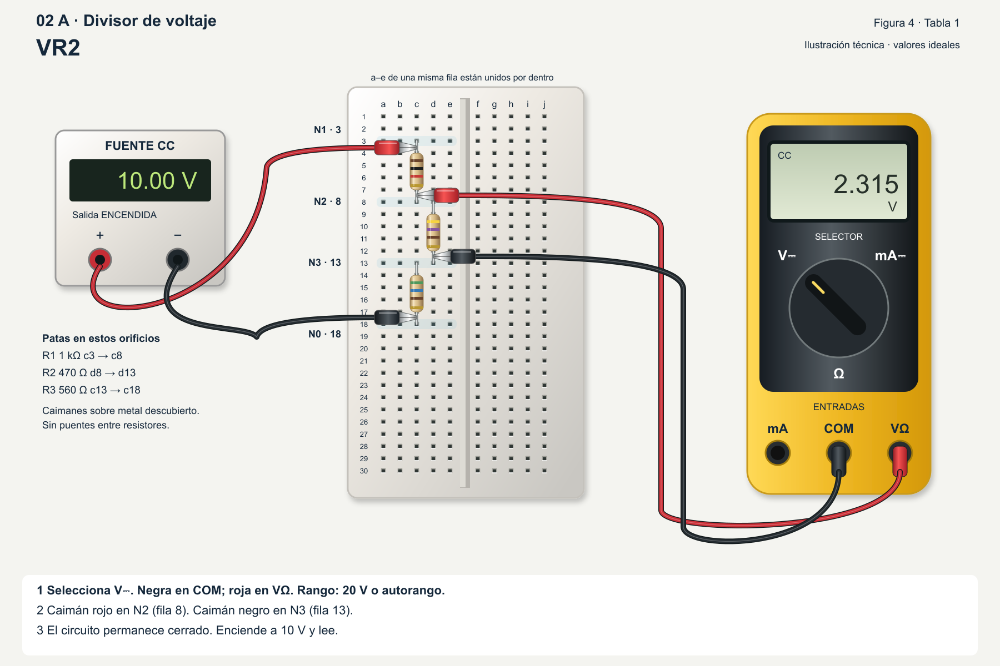
1 Selecciona V⎓. Negra en COM; roja en VΩ. Rango: 20 V o autorango. 2 Caimán rojo en N2 (fila 8). Caimán negro en N3 (fila 13). 3 El circuito permanece cerrado. Enciende a 10 V y lee.Abrir imagen completa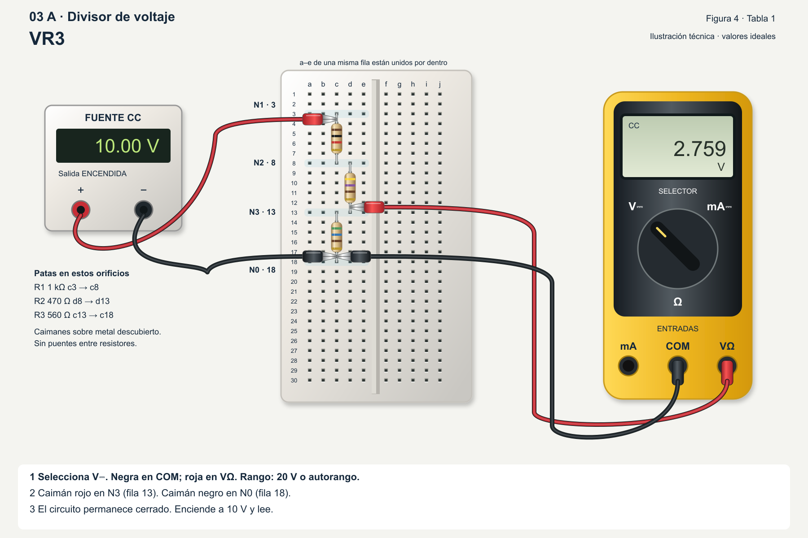
1 Selecciona V⎓. Negra en COM; roja en VΩ. Rango: 20 V o autorango. 2 Caimán rojo en N3 (fila 13). Caimán negro en N0 (fila 18). 3 El circuito permanece cerrado. Enciende a 10 V y lee.Abrir imagen completa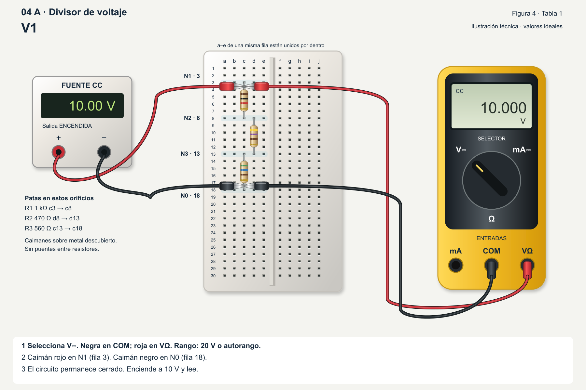
1 Selecciona V⎓. Negra en COM; roja en VΩ. Rango: 20 V o autorango. 2 Caimán rojo en N1 (fila 3). Caimán negro en N0 (fila 18). 3 El circuito permanece cerrado. Enciende a 10 V y lee.Abrir imagen completa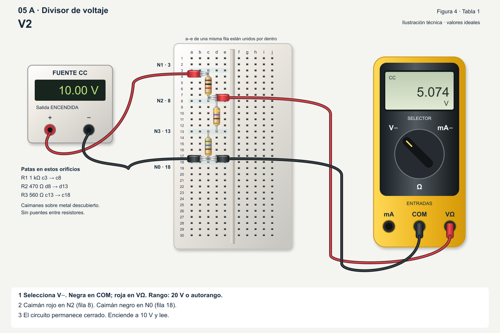
1 Selecciona V⎓. Negra en COM; roja en VΩ. Rango: 20 V o autorango. 2 Caimán rojo en N2 (fila 8). Caimán negro en N0 (fila 18). 3 El circuito permanece cerrado. Enciende a 10 V y lee.Abrir imagen completa1 Selecciona V⎓. Negra en COM; roja en VΩ. Rango: 20 V o autorango. 2 Caimán rojo en N3 (fila 13). Caimán negro en N0 (fila 18). 3 El circuito permanece cerrado. Enciende a 10 V y lee.Abrir imagen completa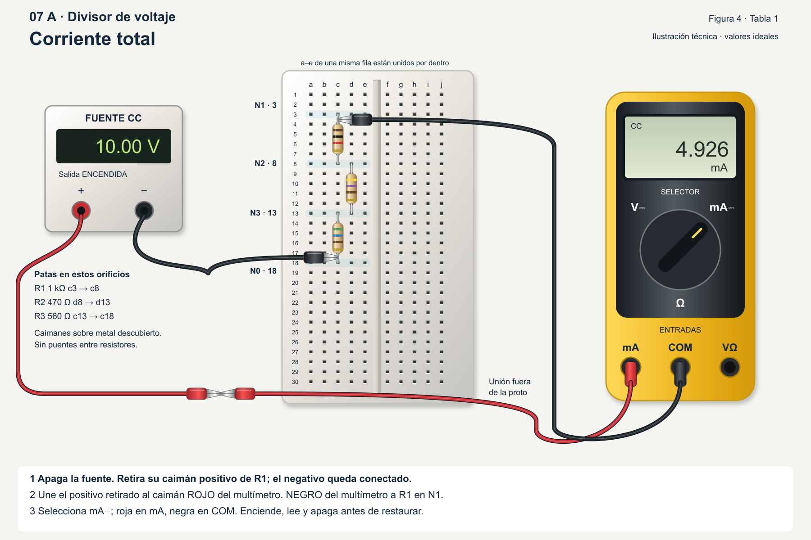
1 Apaga la fuente. Retira su caimán positivo de R1; el negativo queda conectado. 2 Une el positivo retirado al caimán ROJO del multímetro. NEGRO del multímetro a R1 en N1. 3 Selecciona mA⎓; roja en mA, negra en COM. Enciende, lee y apaga antes de restaurar.Abrir imagen completa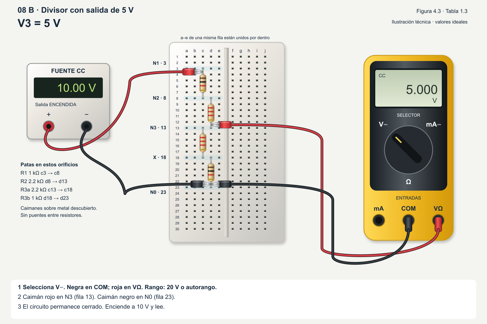
1 Selecciona V⎓. Negra en COM; roja en VΩ. Rango: 20 V o autorango. 2 Caimán rojo en N3 (fila 13). Caimán negro en N0 (fila 23). 3 El circuito permanece cerrado. Enciende a 10 V y lee.Abrir imagen completa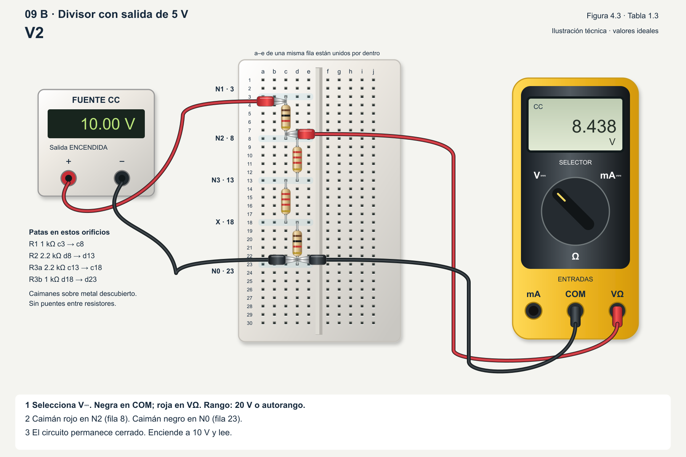
1 Selecciona V⎓. Negra en COM; roja en VΩ. Rango: 20 V o autorango. 2 Caimán rojo en N2 (fila 8). Caimán negro en N0 (fila 23). 3 El circuito permanece cerrado. Enciende a 10 V y lee.Abrir imagen completa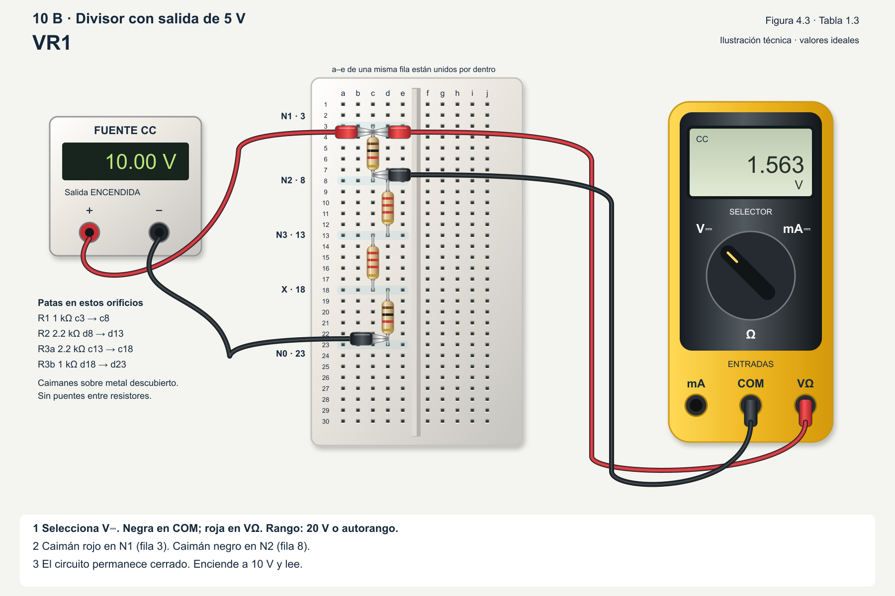
1 Selecciona V⎓. Negra en COM; roja en VΩ. Rango: 20 V o autorango. 2 Caimán rojo en N1 (fila 3). Caimán negro en N2 (fila 8). 3 El circuito permanece cerrado. Enciende a 10 V y lee.Abrir imagen completa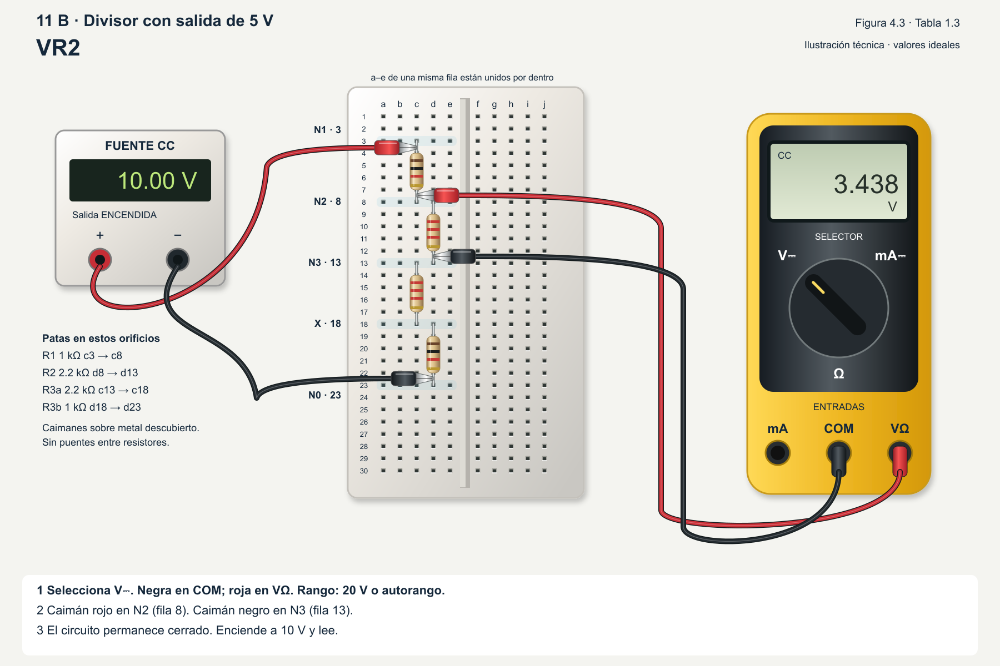
1 Selecciona V⎓. Negra en COM; roja en VΩ. Rango: 20 V o autorango. 2 Caimán rojo en N2 (fila 8). Caimán negro en N3 (fila 13). 3 El circuito permanece cerrado. Enciende a 10 V y lee.Abrir imagen completa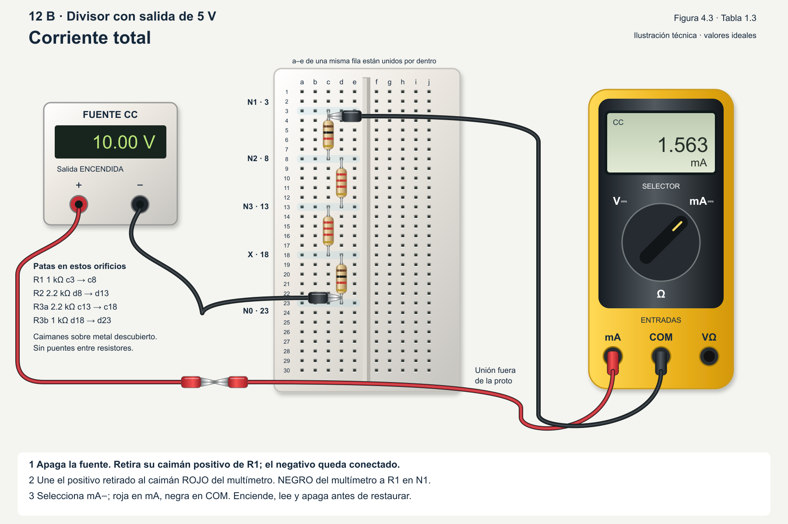
1 Apaga la fuente. Retira su caimán positivo de R1; el negativo queda conectado. 2 Une el positivo retirado al caimán ROJO del multímetro. NEGRO del multímetro a R1 en N1. 3 Selecciona mA⎓; roja en mA, negra en COM. Enciende, lee y apaga antes de restaurar.Abrir imagen completa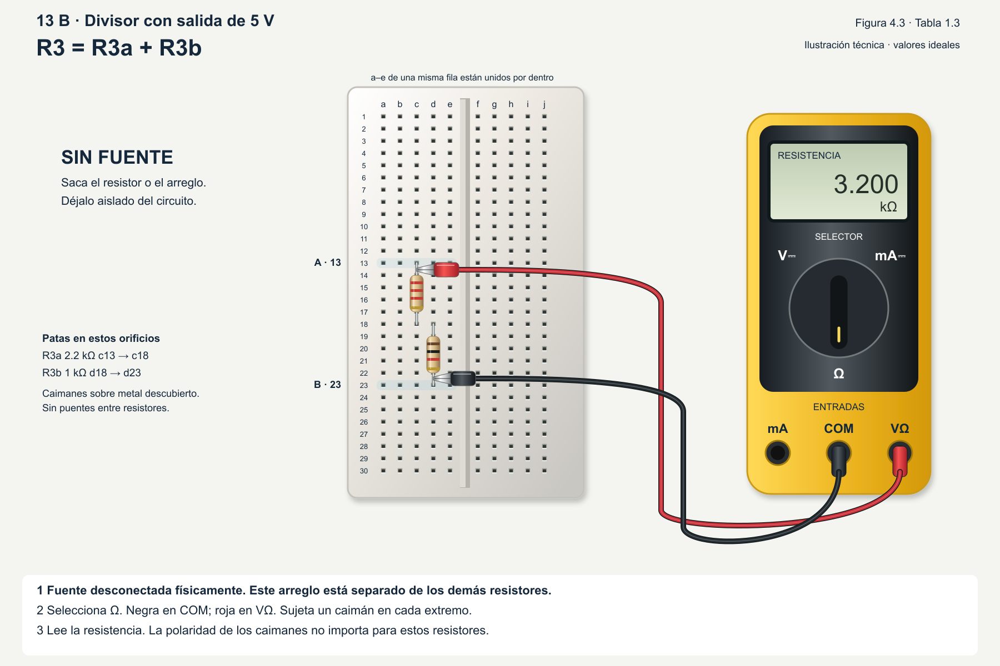
1 Fuente desconectada físicamente. Este arreglo está separado de los demás resistores. 2 Selecciona Ω. Negra en COM; roja en VΩ. Sujeta un caimán en cada extremo. 3 Lee la resistencia. La polaridad de los caimanes no importa para estos resistores.Abrir imagen completa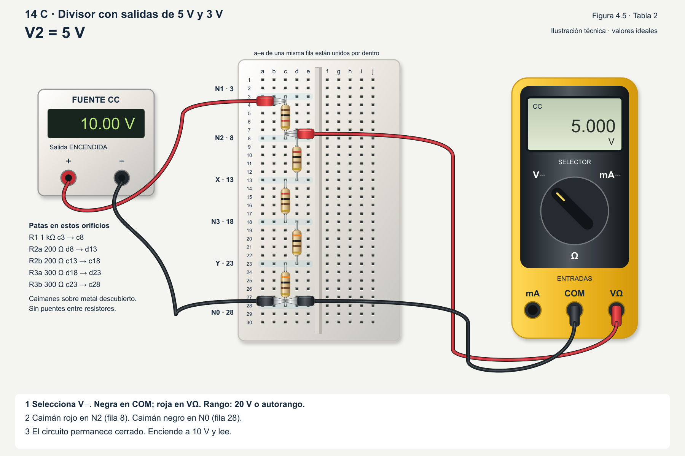
1 Selecciona V⎓. Negra en COM; roja en VΩ. Rango: 20 V o autorango. 2 Caimán rojo en N2 (fila 8). Caimán negro en N0 (fila 28). 3 El circuito permanece cerrado. Enciende a 10 V y lee.Abrir imagen completa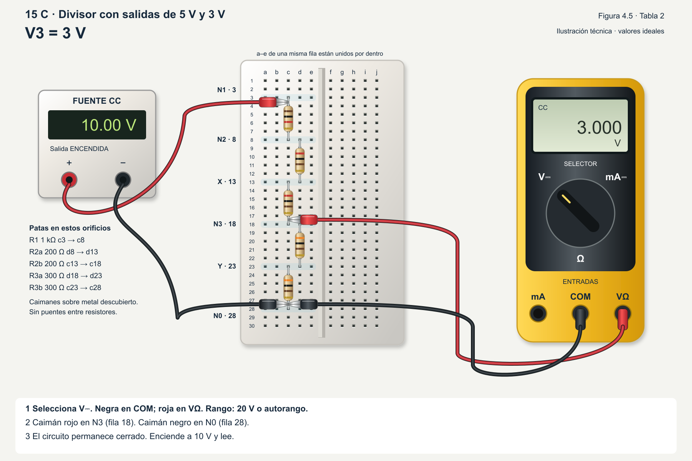
1 Selecciona V⎓. Negra en COM; roja en VΩ. Rango: 20 V o autorango. 2 Caimán rojo en N3 (fila 18). Caimán negro en N0 (fila 28). 3 El circuito permanece cerrado. Enciende a 10 V y lee.Abrir imagen completa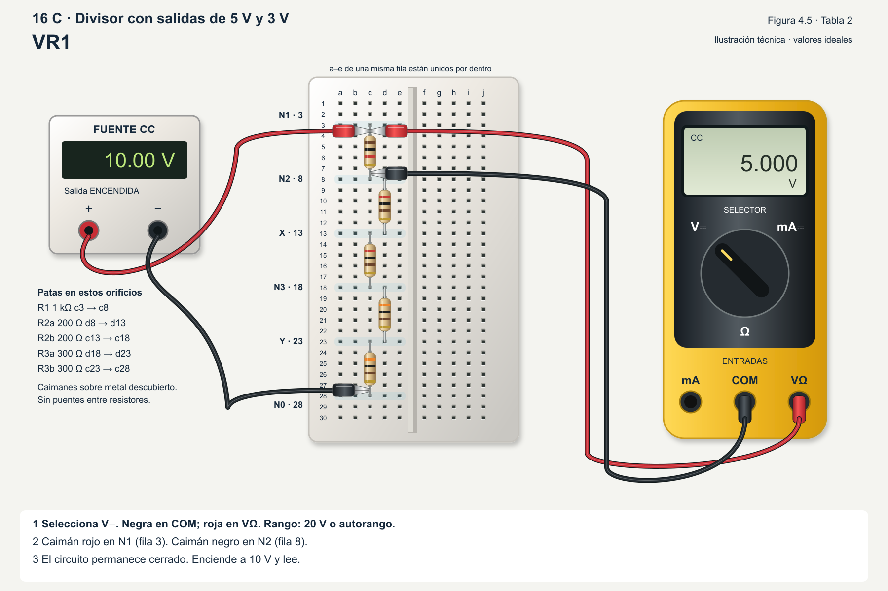
1 Selecciona V⎓. Negra en COM; roja en VΩ. Rango: 20 V o autorango. 2 Caimán rojo en N1 (fila 3). Caimán negro en N2 (fila 8). 3 El circuito permanece cerrado. Enciende a 10 V y lee.Abrir imagen completa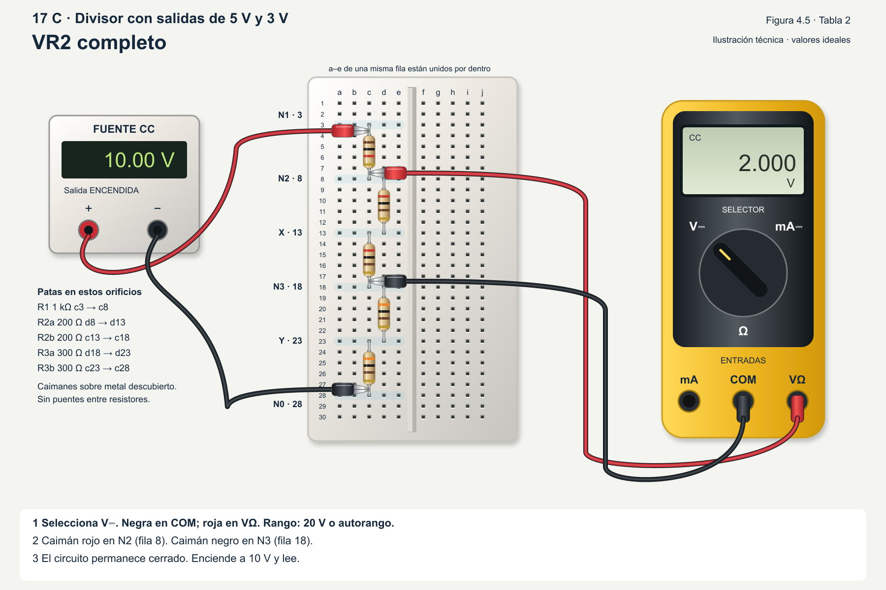
1 Selecciona V⎓. Negra en COM; roja en VΩ. Rango: 20 V o autorango. 2 Caimán rojo en N2 (fila 8). Caimán negro en N3 (fila 18). 3 El circuito permanece cerrado. Enciende a 10 V y lee.Abrir imagen completa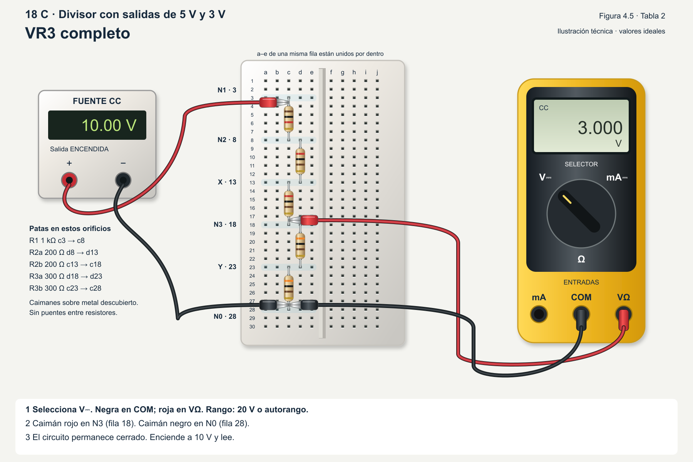
1 Selecciona V⎓. Negra en COM; roja en VΩ. Rango: 20 V o autorango. 2 Caimán rojo en N3 (fila 18). Caimán negro en N0 (fila 28). 3 El circuito permanece cerrado. Enciende a 10 V y lee.Abrir imagen completa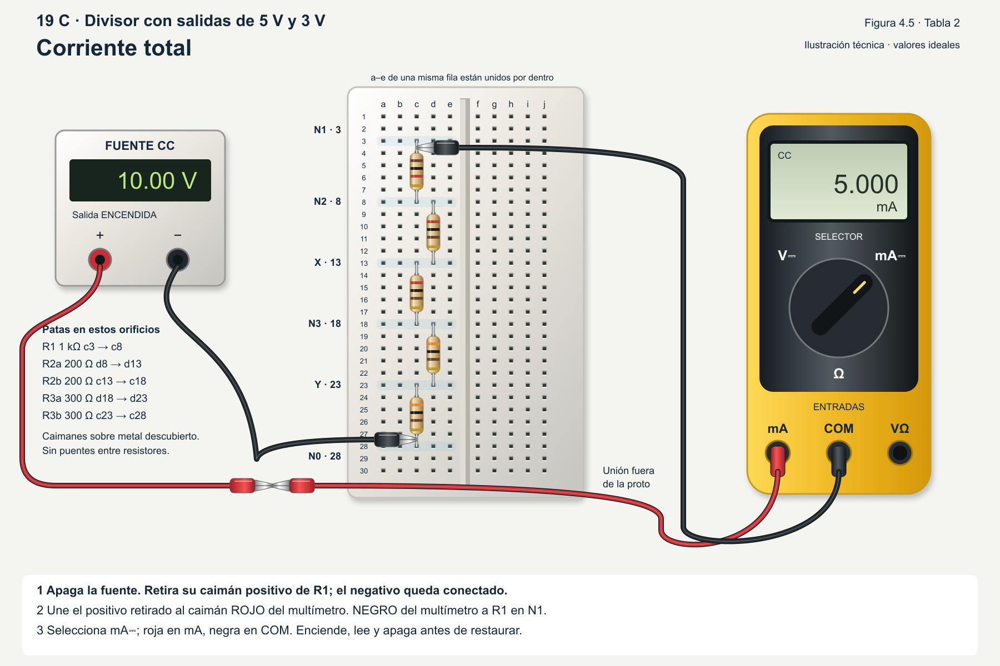
1 Apaga la fuente. Retira su caimán positivo de R1; el negativo queda conectado. 2 Une el positivo retirado al caimán ROJO del multímetro. NEGRO del multímetro a R1 en N1. 3 Selecciona mA⎓; roja en mA, negra en COM. Enciende, lee y apaga antes de restaurar.Abrir imagen completa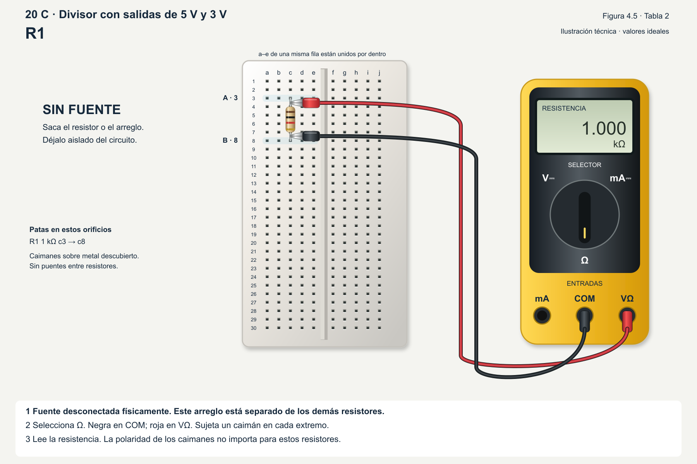
1 Fuente desconectada físicamente. Este arreglo está separado de los demás resistores. 2 Selecciona Ω. Negra en COM; roja en VΩ. Sujeta un caimán en cada extremo. 3 Lee la resistencia. La polaridad de los caimanes no importa para estos resistores.Abrir imagen completa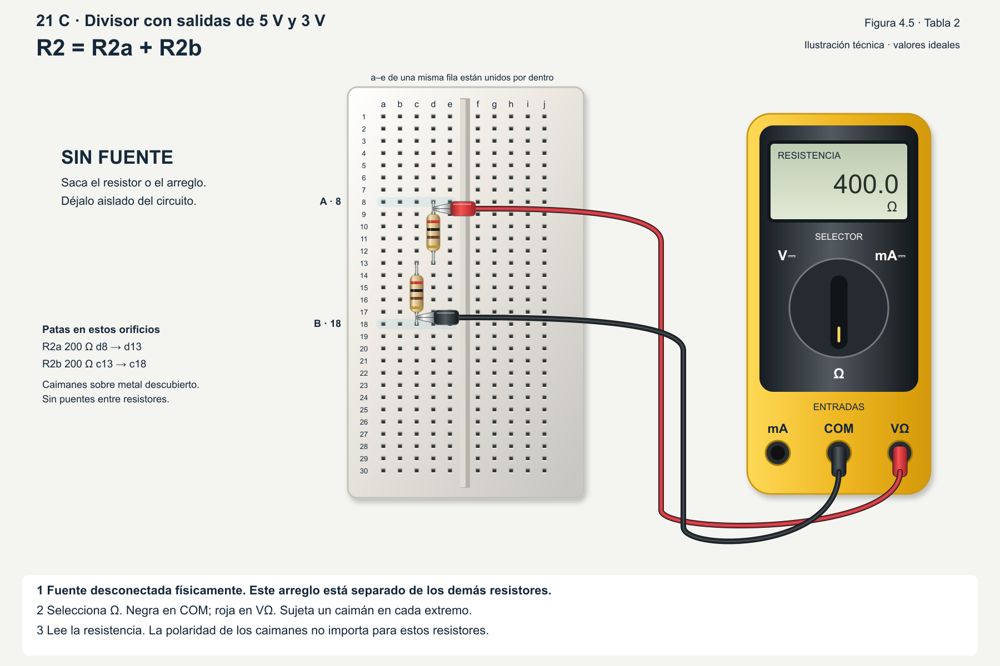
1 Fuente desconectada físicamente. Este arreglo está separado de los demás resistores. 2 Selecciona Ω. Negra en COM; roja en VΩ. Sujeta un caimán en cada extremo. 3 Lee la resistencia. La polaridad de los caimanes no importa para estos resistores.Abrir imagen completa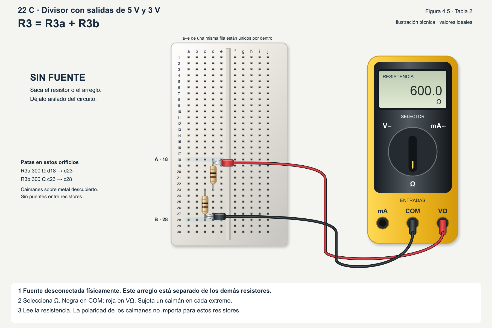
1 Fuente desconectada físicamente. Este arreglo está separado de los demás resistores. 2 Selecciona Ω. Negra en COM; roja en VΩ. Sujeta un caimán en cada extremo. 3 Lee la resistencia. La polaridad de los caimanes no importa para estos resistores.Abrir imagen completa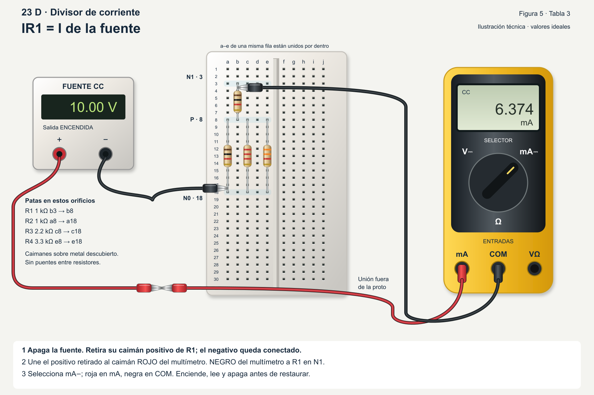
1 Apaga la fuente. Retira su caimán positivo de R1; el negativo queda conectado. 2 Une el positivo retirado al caimán ROJO del multímetro. NEGRO del multímetro a R1 en N1. 3 Selecciona mA⎓; roja en mA, negra en COM. Enciende, lee y apaga antes de restaurar.Abrir imagen completa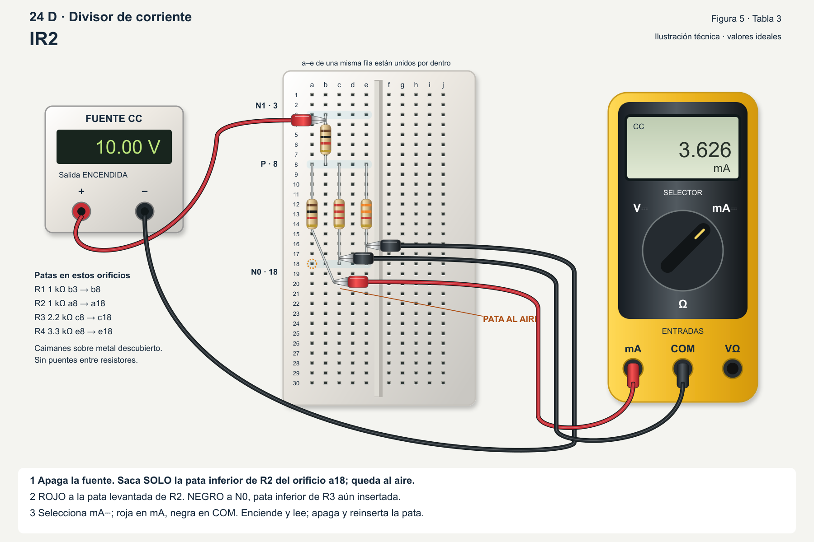
1 Apaga la fuente. Saca SOLO la pata inferior de R2 del orificio a18; queda al aire. 2 ROJO a la pata levantada de R2. NEGRO a N0, pata inferior de R3 aún insertada. 3 Selecciona mA⎓; roja en mA, negra en COM. Enciende y lee; apaga y reinserta la pata.Abrir imagen completa1 Apaga la fuente. Saca SOLO la pata inferior de R3 del orificio c18; queda al aire. 2 ROJO a la pata levantada de R3. NEGRO a N0, pata inferior de R2 aún insertada. 3 Selecciona mA⎓; roja en mA, negra en COM. Enciende y lee; apaga y reinserta la pata.Abrir imagen completa1 Apaga la fuente. Saca SOLO la pata inferior de R4 del orificio e18; queda al aire. 2 ROJO a la pata levantada de R4. NEGRO a N0, pata inferior de R2 aún insertada. 3 Selecciona mA⎓; roja en mA, negra en COM. Enciende y lee; apaga y reinserta la pata.Abrir imagen completa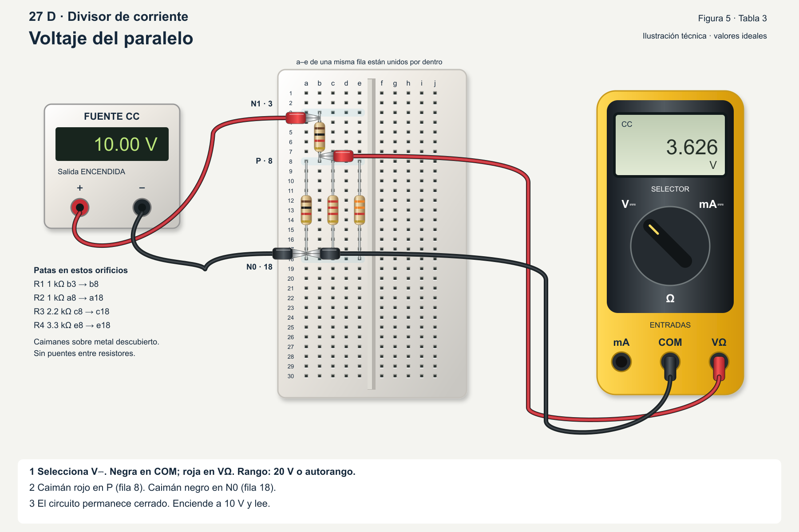
1 Selecciona V⎓. Negra en COM; roja en VΩ. Rango: 20 V o autorango. 2 Caimán rojo en P (fila 8). Caimán negro en N0 (fila 18). 3 El circuito permanece cerrado. Enciende a 10 V y lee.Abrir imagen completa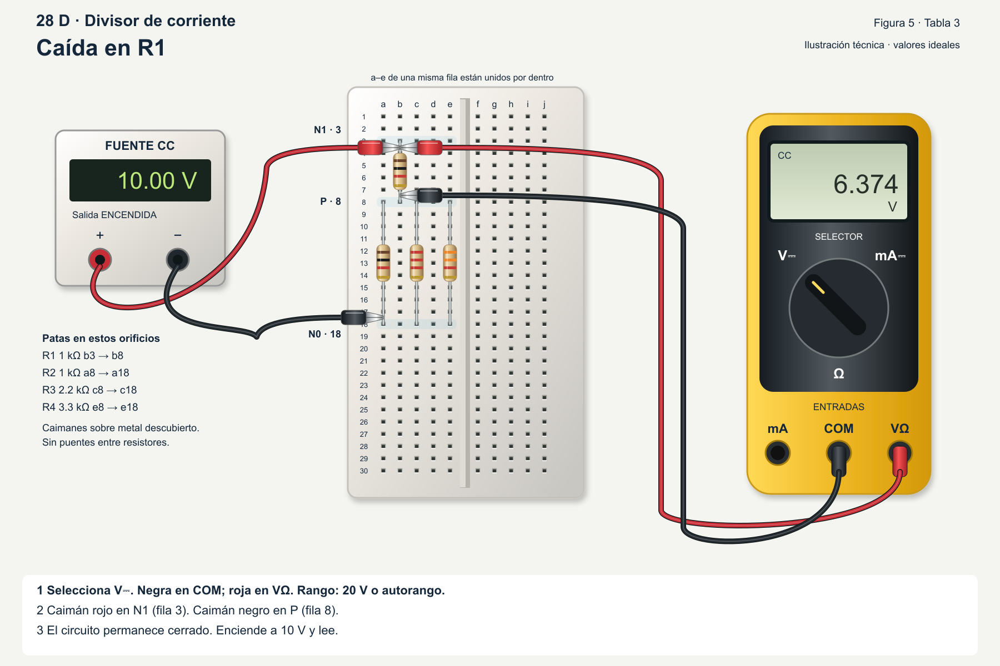
1 Selecciona V⎓. Negra en COM; roja en VΩ. Rango: 20 V o autorango. 2 Caimán rojo en N1 (fila 3). Caimán negro en P (fila 8). 3 El circuito permanece cerrado. Enciende a 10 V y lee.Abrir imagen completa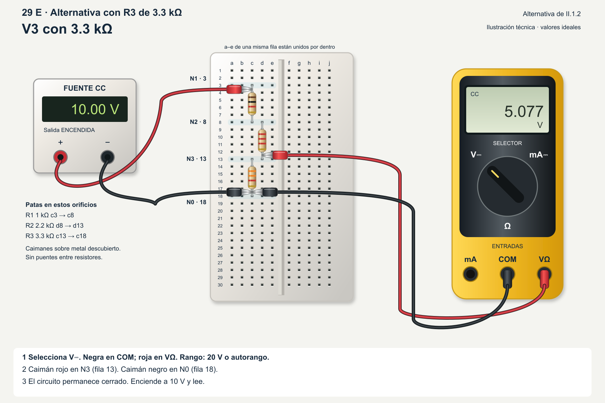
1 Selecciona V⎓. Negra en COM; roja en VΩ. Rango: 20 V o autorango. 2 Caimán rojo en N3 (fila 13). Caimán negro en N0 (fila 18). 3 El circuito permanece cerrado. Enciende a 10 V y lee.Abrir imagen completa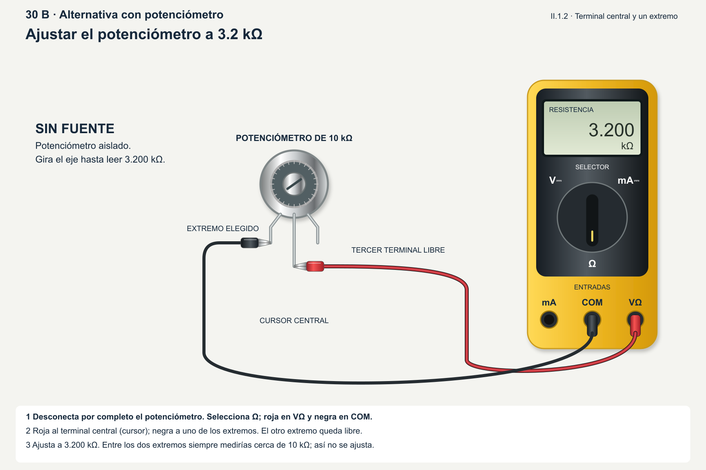
1 Desconecta por completo el potenciómetro. Selecciona Ω; roja en VΩ y negra en COM. 2 Roja al terminal central (cursor); negra a uno de los extremos. El otro extremo queda libre. 3 Ajusta a 3.200 kΩ. Entre los dos extremos siempre medirías cerca de 10 kΩ; así no se ajusta.Abrir imagen completa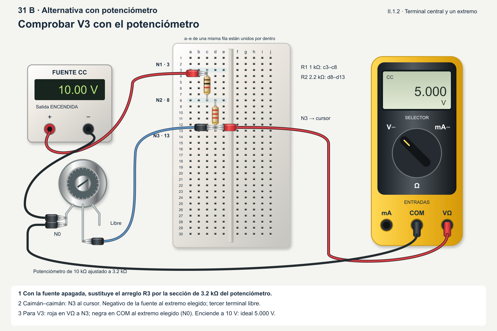
1 Con la fuente apagada, sustituye el arreglo R3 por la sección de 3.2 kΩ del potenciómetro. 2 Caimán–caimán: N3 al cursor. Negativo de la fuente al extremo elegido; tercer terminal libre. 3 Para V3: roja en VΩ a N3; negra en COM al extremo elegido (N0). Enciende a 10 V: ideal 5.000 V.Abrir imagen completaMontaje A verificado en Tinkercad. Los otros montajes fueron comprobados por cálculo independiente y análisis nodal.